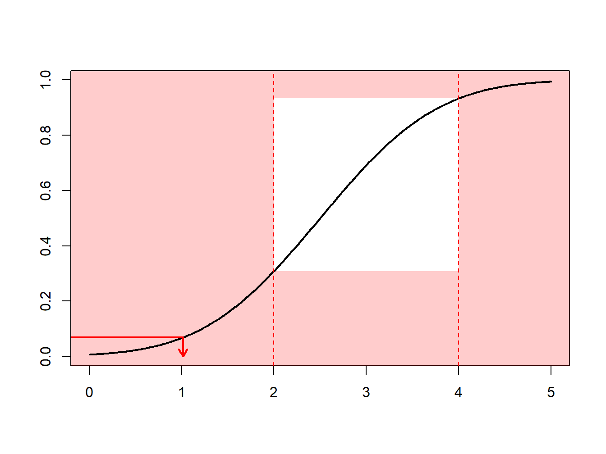
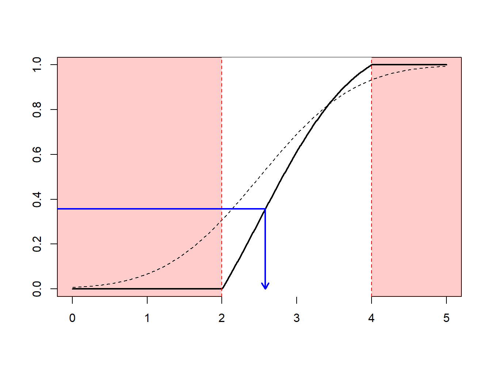

Bab 8 6.4 Importance Sampling
Bagian 6.1 memperkenalkan teknik Monte Carlo dengan menggunakan teknik inversi: untuk membangkitkan sebuah variabel acak \(X\) dengan distribusi \(F\), terapkan \(F^{-1}\) pada pemanggilan sebuah generator acak (seragam pada interval satuan). Bagaimana jika kita ingin menggambar sesuai dengan \(X\), dengan syarat \(X∈[a,b]\)?
Seseorang dapat menggunakan mekanisme terima-tolak: menarik \(x\) dari distribusi \(F\)
jika \(x\in[a,b]\): simpan (“terima”)
jika \(x\notin[a,b]\): gambar yang lain (“tolak”)
Amati bahwa dari n nilai yang awalnya dihasilkan, kita simpan di sini hanya \([F(b)-F(a)] ⋅ n\) hasil imbang, rata-rata.
Contoh 6.4.1. Penarikan dari Distribusi Normal. Misalkan kita menggambar dari distribusi normal dengan rata-rata 2,5 dan varians 1, \(N(2,5,1)\), tetapi hanya tertarik pada gambar yang lebih besar dari \(a≥2\) dan kurang dari \(b≤4\). Artinya, kita hanya dapat menggunakan \(F(4)-F(2)=Φ(4-2.5)-Φ(2-2.5) = 0.9332 - 0.3085 = 0.6247\) proporsi undian. Gambar 6.13 menunjukkan bahwa beberapa hasil undian berada di dalam interval \((2,4)\) dan beberapa di luarnya.
mu = 2.5
sigma = 1
a = 2
b = 4
Fa = pnorm(a,mu,sigma)
Fb = pnorm(b,mu,sigma)
pic_ani = function(){
u=seq(0,5,by=.01)
plot(u,pnorm(u,mu,sigma),col="white",ylab="",xlab="")
rect(-1,-1,6,2,col=rgb(1,0,0,.2),border=NA)
rect(a,Fa,b,Fb,col="white",border=NA)
lines(u,pnorm(u,mu,sigma),lwd=2)
abline(v=c(a,b),lty=2,col="red")
ru <- runif(1)
clr <- "red"
if((qnorm(ru,mu,sigma)>=a)&(qnorm(ru,mu,sigma)<=b)) clr <- "blue"
segments(-1,ru,qnorm(ru,mu,sigma),ru,col=clr,lwd=2)
arrows(qnorm(ru,mu,sigma),ru,qnorm(ru,mu,sigma),0,col=clr,lwd=2,length = .1)
}for (i in 1:numAnimation) {pic_ani()}
Sebagai gantinya, seseorang dapat menggambar menurut distribusi bersyarat \(F^⋆\) yang didefinisikan sebagai
\[F^{\star}(x) = \Pr(X \le x | a < X \le b) =\frac{F(x)-F(a)}{F(b)-F(a)}, \ \ \ \text{for } a < x \le b .\] Dengan menggunakan metode inverse transform pada Bagian 6.1.2, kita mendapatkan hasil imbang
\[X^\star=F^{\star-1}\left( U \right) = F^{-1}\left(F(a)+U\cdot[F(b)-F(a)]\right)\]
memiliki distribusi \(F⋆^\). Dinyatakan dengan cara lain, definisikan
\[\tilde{U} = (1-U)\cdot F(a)+U\cdot F(b)\]
dan kemudian gunakan \(F^{-1}(\tilde{U})\). Dengan pendekatan ini, setiap undian dihitung.
Hal ini dapat dikaitkan dengan mekanisme pengambilan sampel kepentingan: kita menarik lebih sering di wilayah yang kita harapkan memiliki kuantitas yang memiliki kepentingan. Transformasi ini dapat dianggap sebagai “perubahan ukuran.”
pic_ani = function(){
u=seq(0,5,by=.01)
plot(u,pnorm(u,mu,sigma),col="white",ylab="",xlab="")
rect(-1,-1,6,2,col=rgb(1,0,0,.2),border=NA)
rect(a,Fa,b,Fb,col="white",border=NA)
lines(u,pnorm(u,mu,sigma),lwd=2)
abline(h=pnorm(c(a,b),mu,sigma),lty=2,col="red")
ru <- runif(1)
rutilde <- (1-ru)*Fa+ru*Fb
segments(-1,rutilde,qnorm(rutilde,mu,sigma),rutilde,col="blue",lwd=2)
arrows(qnorm(rutilde,mu,sigma),rutilde,qnorm(rutilde,mu,sigma),0,col="blue",lwd=2,length = .1)
}for (i in 1:numAnimation) {pic_ani()}
Pada Contoh 6.4.1., kebalikan dari distribusi normal sudah tersedia (dalam R, fungsinya adalah qnorm). Namun, untuk aplikasi lain, hal ini tidak terjadi. Kemudian, kita cukup menggunakan metode numerik untuk menentukan \(X^⋆\) sebagai solusi dari persamaan \(F(X^\star) =\tilde{U}\) di mana \(\tilde{U}=(1-U)\cdot F(a)+U\cdot F(b)\)). Lihat kode ilustrasi berikut ini.
pic_ani = function(){
u=seq(0,5,by=.01)
plot(u,pnorm(u,mu,sigma),col="white",ylab="",xlab="")
rect(-1,-1,6,2,col=rgb(1,0,0,.2),border=NA)
rect(2,-1,4,2,col="white",border=NA)
lines(u,pnorm(u,mu,sigma),lty=2)
pnormstar <- Vectorize(function(x){
y=(pnorm(x,mu,sigma)-Fa)/(Fb-Fa)
if(x<=a) y <- 0
if(x>=b) y <- 1
return(y)
})
qnormstar <- function(u) as.numeric(uniroot((function (x) pnormstar(x) - u), lower = 2, upper = 4)[1])
lines(u,pnormstar(u),lwd=2)
abline(v=c(2,4),lty=2,col="red")
ru <- runif(1)
segments(-1,ru,qnormstar(ru),ru,col="blue",lwd=2)
arrows(qnormstar(ru),ru,qnormstar(ru),0,col="blue",lwd=2,length = .1)
}for (i in 1:numAnimation) {pic_ani()}
